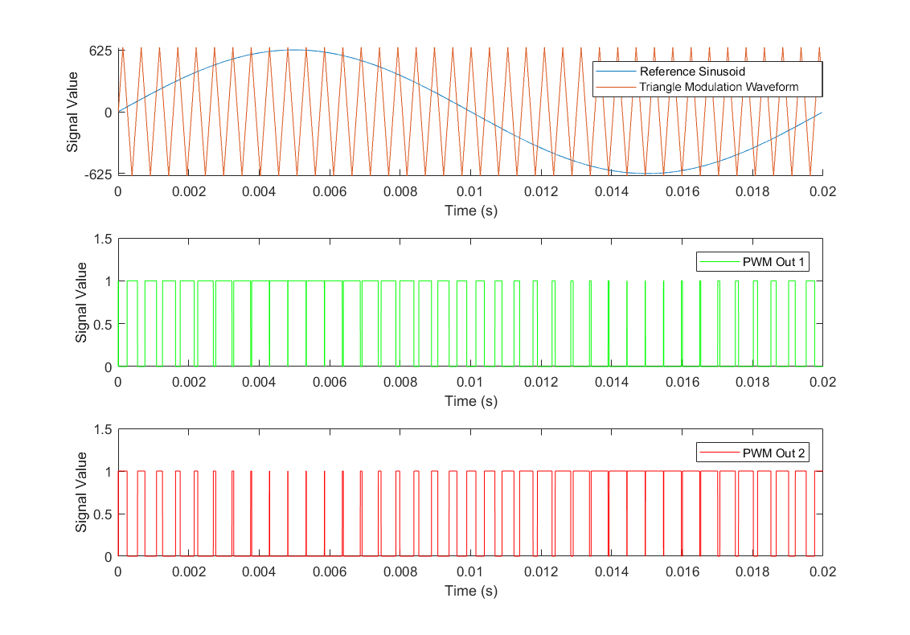

Capstone: Single-Phase Inverter with FPGA SPWM Control
2018-04-25

The Project
This project was for my capstone design course at Queen’s, ELEC 490. My scope was focused on creating a control system with an Altera FPGA - in this application, we used Sine-Triangle Pulse Width Modulation (SPWM).
Our task was this: design and implementation of a single-phase inverter for converting direct-current (DC) electricity from solar panels into alternating current (AC). The AC output would be used to drive a load, or for connection to supply an electrical grid.
After completing initial background research, it was decided to work with a full-bridge switching topology for the main inverter circuit. With this, a functional simulation of an inverter circuit was created in PSIM. It consisted of a resistive load and a closed-loop control system using a proportional-resonant (PR) controller. From these simulations, a full schematic and printed circuit board (PCB) layout was created in Altium Designer to implement the system, along with support circuitry for driving MOSFET switches and for current and voltage sensing.

Once the system was designed, it was implemented on the four-layer PCB. During this process, an open-loop control system implementing sinusoidal pulse-width modulation (SPWM) was written in VHDL for use on an Altera DE0 FPGA.
Testing of the system was done using a Chroma Power Analyzer in the ePOWER lab of Walter Light Hall. Under testing conditions, the completed system demonstrated a 93% efficiency, a THD of 14.05%, and a unity power factor using a resistive load.
To make this more concise, here was part of my scope:
Control System: Open-Loop Sine-Triangle Pulse Width Modulation
Given time constraints of the project, an open loop control system was implemented using a sine-triangle pulse width modulation (SPWM) scheme. In this approach, a train of high-frequency square waves is fed to the gate drivers on the PCB, which in turn control the gate voltage of the MOSFET switches. The pulses are generated by comparing a reference sinusoid wave to a modulation waveform, in this case a triangle wave. When the value of the reference signal is more than the modulation waveform, the PWM output is high. Otherwise, it is low. This can be seen in the figure below. Given the manner the gate drivers control the MOSFET switches, a pair of complimentary pulse trains needed to be generated.

Using this technique, a low-frequency signal can be extracted at the output that matches the frequency of the reference sinusoid. In practice, the modulation wave is at a much greater frequency than the reference wave.
This control system was implemented on an Altera DE0 FPGA, written in VHDL. The operation of the system is largely dictated by the onboard 50MHz clock, with a period of 20ns. For program simplification and to save on memory, the signals are stored as integer values. This limitation made it sensical for the program to generate a 50Hz sine wave, as the 20ms period greatly simplifies the operation compared to 60Hz with a 16.67ms period.
The triangle wave is stored as a simple integer, which is continually changed on each rising clock edge between the values of -625 to 625. With this range, the result is a triangle carrier wave operating at 20kHz.
As sine is a more complex function, a table of 10,000 integer samples of a single sine period is generated at the start of the program. The samples are sized to have the same amplitude range as the triangle carrier wave. A new sine value is retrieved from the table every 2µs for comparison to the triangle signal.
On each rising edge of the system clock, the triangle signal and current sine value are compared to create the complimentary PWM outputs. These outputs are mapped to I/O pins on the FPGA, which are then further connected to the gate driver inputs. The full VHDL code can be seen below!
library ieee;
use ieee.std_logic_1164.all;
use ieee.std_logic_unsigned.all;
use ieee.numeric_std.all;
use ieee.math_real.all;
entity controlFinal is
port ( clk: in std_logic;
pwm_out1: out std_logic;
pwm_out2: out std_logic );
end controlFinal;
architecture spwm of controlFinal is
signal triValue: integer range -626 to 626 := 0;
signal triDir: integer range -1 to 1 := 1;
signal countSin: integer range 0 to 101:= 0;
signal sinIndex: integer range 0 to 10000 := 0;
signal sinValue: integer;
type sintab is array(0 to 9999) of signed(10 downto 0);
signal sinTable: sintab;
begin
genSinValues: --Generate the sine value table
for idx in 0 to 9999 generate
constant x: real := SIN(real(idx)*real(2)*math_pi/real(10000));
constant xn: signed(10 downto 0) := to_signed(integer(x*real(625)),11);
begin
sinTable(idx) <= xn;
end generate;
incSineVal: process (sinIndex) --Each time the sine index changes, fetch a new value from the table
begin
sinValue <= to_integer(sintable(sinindex));
end process incSineVal;
indexCount: process (clk)
begin
if rising_edge(clk) then
--Increment the triangle wave signal
triValue <= trivalue + tridir;
--If at peak amplitude,
if triValue >= 625 then
triDir <= -1;
elsif triValue <= -625 then
triDir <= 1;
end if;
--Increment count value
countSin <= countsin + 1;
--If time to change sine value
if countSin >= 99 then
countSin <= 0;
--Increment the sine table index
sinIndex <= sinindex + 1;
if sinIndex >= 9999 then
sinIndex <= 0;
end if;
end if;
end if;
end process indexCount;
-- Compare Value of Sine Wave with Triangle Wave on each clock edge
pwmOutput: process (clk)
begin
if rising_edge(clk) then
if(sinValue > triValue) then
pwm_out1 <= '1'; pwm_out2 <="0" ;
elsif (sinValue < triValue) then
pwm_out1 <= '0'; pwm_out2 <="1" ;
end if;
end if;
end process pwmOutput;
end architecture spwm;